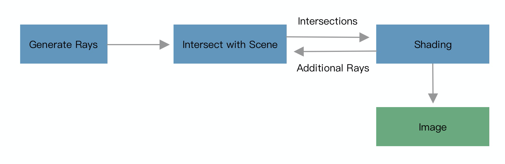
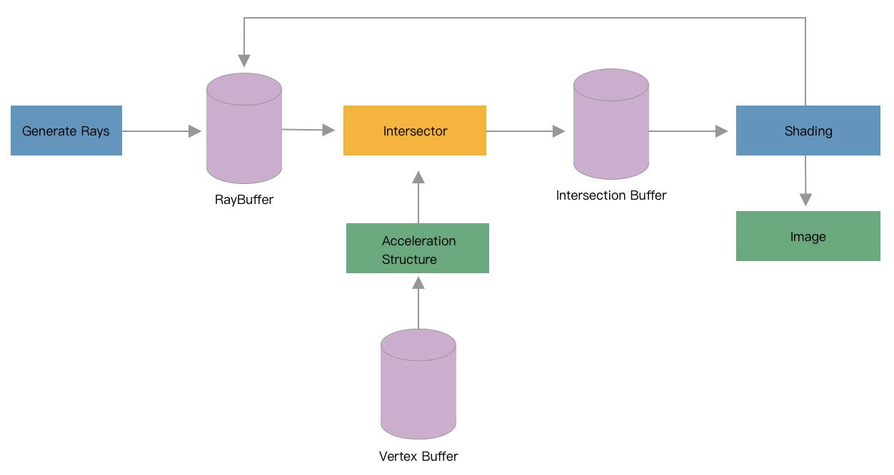
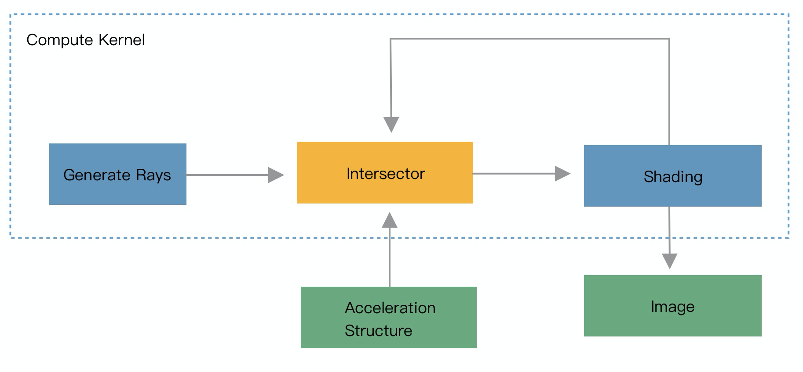
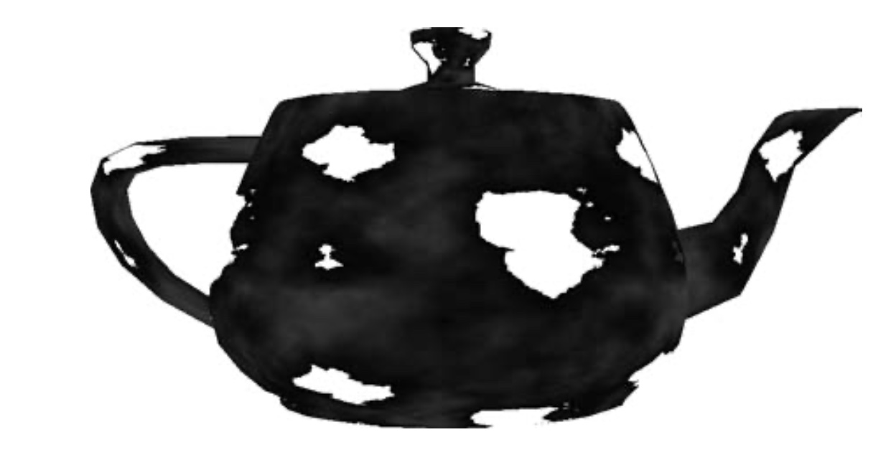
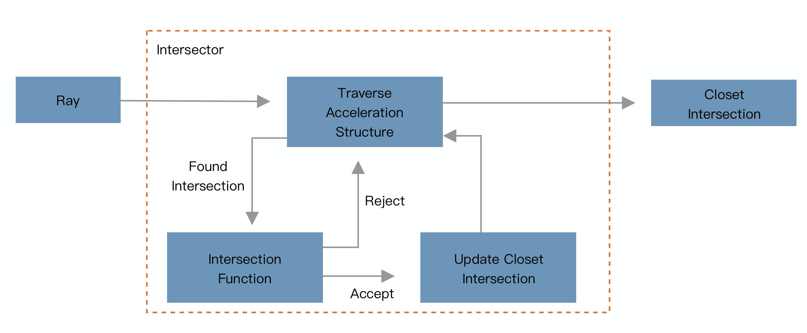
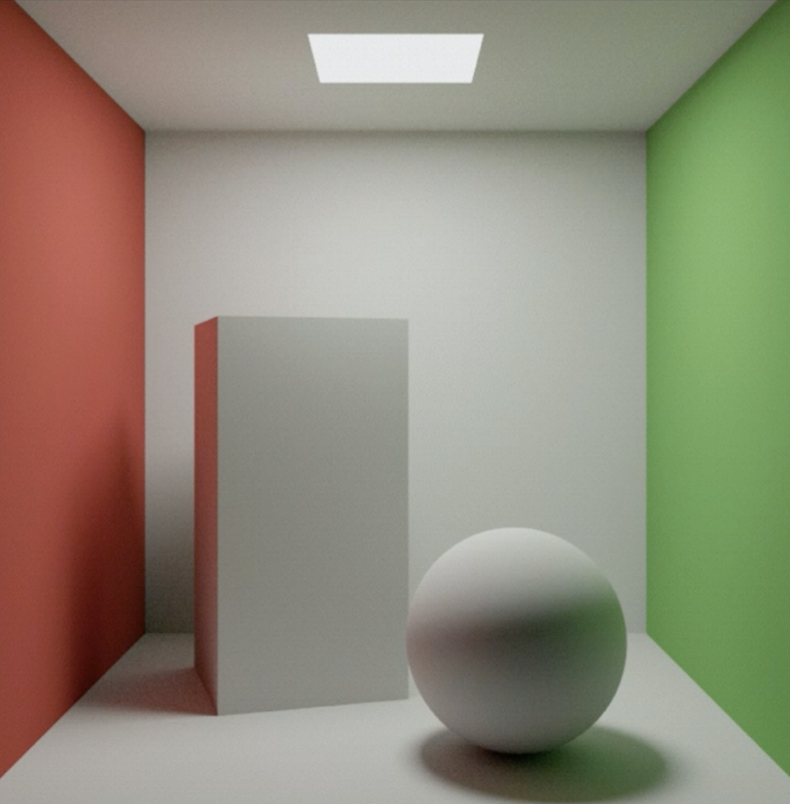
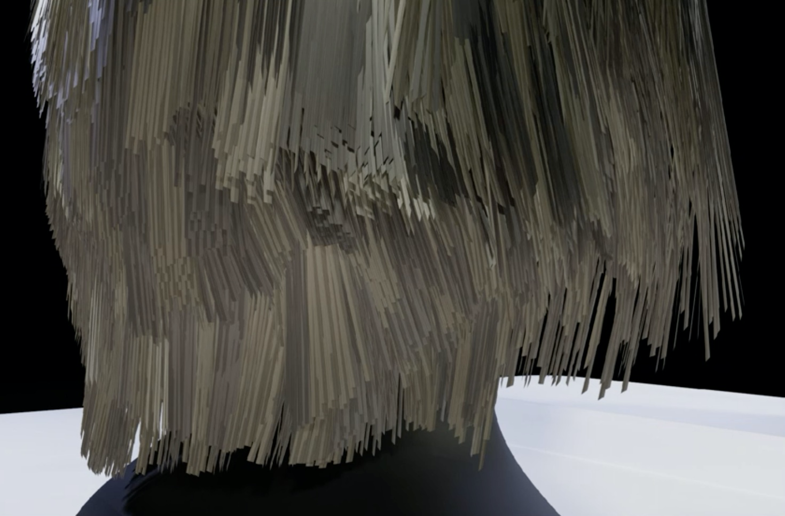
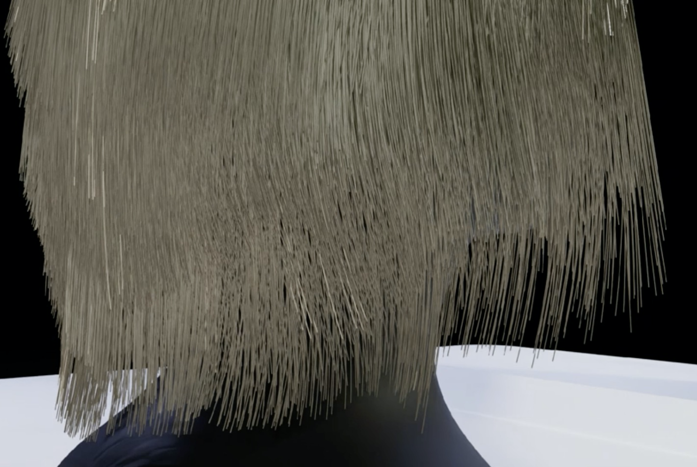
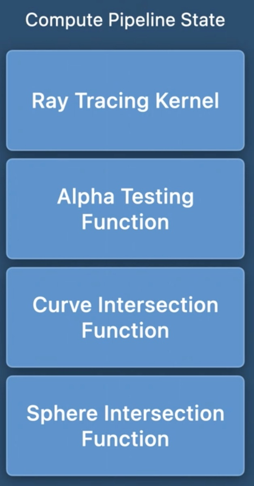

WWDC20 Discover ray tracing with Metal
前置要求：
- 熟悉Metal的基本概念和渲染流程
- 对于MPS的工作原理有基本的了解
- 对于在Metal中使用RayTracing有基本的了解，可以跳转 Apple 613 ，一段相当长的Session
本次 Session 的两个议题：
Metal 关于 Ray Tracing 的新 API
- 允许你在任何计算内核（compute kernel）中进行交叉检测（intersection testing）
- 允许你通过使用交叉函数（intersection functions）定制交叉检测过程
Ray Tracing简单回顾
首先回顾一下 Ray Tracing 的基本定义：跟踪并改变一个光线的传播路径。这个路径受到环境中与之相交的平面的影响。 Ray Tracing 在很多方面都有应用，比如渲染、音频和物理仿真、碰撞检测、AI和寻找路径（pathfinding）。
使用 Ray Tracing 技术最多的场景是照片的真实化。在真实化照片的渲染中，Ray Tracing 用来对单个光线进行建模，用来模拟反射和折射、阴影、间接照明等效果。
在这里回顾一下光线渲染的基本优化原理：避免使用简单的正向渲染，使用 Geometry Buffer 结合 Tile Memory 完成延迟渲染，避免大量的Draw calls 。
在 Metal 中使用 Ray Tracing 的流程：
- 摄像机发射一个光线到场景中
- 测试光线跟场景中的几何图形是否相交
- 交点表示光在该表面反弹
- 反弹的强度和方向决定了这个物体在这个点所呈现的样子
- 为每一个交点计算颜色，并更新图像
- 这一步即Shading，即我们在【TODO】中进行的计算
|
图 1.1 Ray Tracing 流程
- Shading 过程中可能产生额外的光线，需要对新产生的光线进行进一步计算
可以看到，上述过程包含极大的计算量，过去两届WWDC都在讲述如何将上述繁重的工作丢给Metal Performance shader去完成。
使用 MPS 加速 Ray Tracing的流程图：
|
图 1.2 使用 MPS 加速后的 Ray Tracing 流程图
- 首先我们给光线建一个 Ray Buffer，给结果建立一个 Intersection Buffer
- 生成光线并存入 Ray Buffer
- 使用 MPSRayIntersector 充当实际的 Intersector，将光线跟场景中的几何图形的交点的测试结果写入 Intersection Buffer
- 构建一个 MPSAccelerationStructure 来加速第3步
- 在第三步完成后，启动一个新的 Compute Kernel 来完成Shading最后的阴影/高光渲染过程
可以清晰的看到，我们在上一个部分描述的：
在测试光线与几何图形交点的过程中可能产生新的光线
被清晰的反映到了从 Shading 方块到 Ray Buffer 的箭头中。
图 1.2 所示的流程图是一个非常清晰准确的编程模型，但是它也有缺点：
我们把整个 Ray Tracing 的过程分成了三个独立的 Compute Kernel 来完成，带来了一个现实的问题：需要通过访问内存来完成数据在kernel和buffer之间的传递。
新的 Metal API 允许我们将三个 Compute Kernel 合并成一个大的 Compute Kernel ，进而不再需要继续在 kernel 之间传递光线数据，从而消除了 Ray Buffer 和 Intersection Buffer 。
|
图 1.3 新的 Compute Kernel
同时，Kernel 合并的另一个好处是，我们可以看到在外面因为有 Shading 过程产生的 Ray ，我们不得不进行一次外部的循环，现在我们只需要在 Kernel 内进行循环，这意味着更少的 kernel 启动次数，意味着更高的计算效率。
下面我们来看一下新的 kernel 是怎样工作的
[[kernel]]
void rtKernel(primitive_acceleration_structure accelerationStructure [[buffer(0)]], ...)
{
//创建Ray
ray r = generateCameraRay(tid);
//创建Intersector
intersector<triangle_data> intersector;
//跟场景进行intersection测试
intersection_result<triangle_data> intersection;
intersection = intersector.intersect(r, accelerationStructure);
//shading..
...
}- 首先我们创建光线，generateCameraRay() 是使用给定的tid的pixel来创建一个初始的光线对象。
- 然后我们创建 Intersector 对象，Intersector 对象负责找到所有光线和几何图形的交点，我们可以对这个对象设置很多属性来控制它的行为，控制 Intersector 的行为是本 session 的另一个重要议题。
- 调用 Intersector 的方法，获取 Intersection 结果。
- 使用 Intersection 结果进行shading
可以直观的看到，使用 Ray Tracing 的编程复杂度被大大的降低了，几乎没有什么编程上的成本就可以使用酷炫的 Ray Tracing 效果。
这里需要额外说明的一点是，可以看到我们使用 MTLAccelerationStructure，简单讲，这个类会把你的 model data 重新优化为适合进行 intersection testing 的结构。
创建一个 MTLAcceleratingStructure 需要比较复杂的流程：
我们对场景中的 Geometries （我们自己构建的场景需要自己保存添加进去的 Geometry ）进行遍历，获取到每一个 Geometry 。注意这里的 Geometry 实际上是我们自己定义的类，我们通过自定义的方式，获取最大限度控制进行 Acceleration 的粒度。
对于某一个 Geometry，有如下流程：
获取该 Geometry 定义的 MTLAccelerationStructureGeometryDescriptor
- 如上所述，这里返回的是 Triangle 还是 BoundingBox ，看你自己对这个 Geometry 的设定，准确的设定有利于降低加速过程中的内存消耗。
创建一个 MTLPrimitiveAccelerationStructureDescriptor ，把刚才获取的MTLAccelerationStructureGeometryDescriptor 填充进去。
使用MTLPrimitiveAccelerationStructureDescriptor创建我们的最终的 MTLAcceleratingStructure 。创建 MTLAccelerationStructure 的过程可能会消耗大量的内存，我们有着很高的决定权来决定什么时候，在什么地方存放我们的 MTLAccelerationStructure 。这意味着我们可以快速释放和重复使用被 MTLAccelerationStructure 占用的内存。但是也意味着大量的控制模版代码，如下：
//接受参数是MTLAccelerationStructureDescriptor，包括我们用
- (**id** <MTLAccelerationStructure>)newAccelerationStructureWithDescriptor:(MTLAccelerationStructureDescriptor *)descriptor
{
// Query for the sizes needed to store and build the acceleration structure.
MTLAccelerationStructureSizes accelSizes = [_device accelerationStructureSizesWithDescriptor:descriptor];
// Allocate an acceleration structure large enough for this descriptor. This doesn't actually
// build the acceleration structure, just allocates memory.
**id** <MTLAccelerationStructure> accelerationStructure = [_device newAccelerationStructureWithSize:accelSizes.accelerationStructureSize];
// Allocate scratch space used by Metal to build the acceleration structure.
// Use MTLResourceStorageModePrivate for best performance since the sample
// doesn't need access to buffer's contents.
**id** <MTLBuffer> scratchBuffer = [_device newBufferWithLength:accelSizes.buildScratchBufferSize options:MTLResourceStorageModePrivate];下面开始 build acceleration structure ：
这里做出的改动是，我们现在可以完全控制 MTLAcceleratingStructure 在哪个 Command Queue 和 Command Buffer 上创建，这有利于降低创建 MTLAcceleratingStructure 的时候，当前 Queue 的负载，例子中使用的还是默认 Queue。
可以看到 MTLAcceleratingStructure 现在完全在GPU中创建，不需要跟CPU进行同步，所以我们不再需要跟 CPU 做同步就可以在GPU中运行相交测试的工作。
// Create a command buffer which will perform the acceleration structure build
**id** <MTLCommandBuffer> commandBuffer = [_queue commandBuffer];
// Create an acceleration structure command encoder.
**id** <MTLAccelerationStructureCommandEncoder> commandEncoder = [commandBuffer accelerationStructureCommandEncoder];
// Allocate a buffer for Metal to write the compacted accelerated structure's size into.
**id** <MTLBuffer> compactedSizeBuffer = [_device newBufferWithLength:**sizeof**(uint32_t) options:MTLResourceStorageModeShared];
// Schedule the actual acceleration structure build
[commandEncoder buildAccelerationStructure:accelerationStructure
descriptor:descriptor
scratchBuffer:scratchBuffer
scratchBufferOffset:0];
// Compute and write the compacted acceleration structure size into the buffer. You
// must already have a built accelerated structure because Metal determines the compacted
// size based on the final size of the acceleration structure. Compacting an acceleration
// structure can potentially reclaim significant amounts of memory since Metal must
// create the initial structure using a conservative approach.
[commandEncoder writeCompactedAccelerationStructureSize:accelerationStructure
toBuffer:compactedSizeBuffer
offset:0];
// End encoding and commit the command buffer so the GPU can start building the
// acceleration structure.
[commandEncoder endEncoding];
[commandBuffer commit];
**return** compactedAccelerationStructure;
}接下来会讨论第二个议题，如何定制 Intersection 的过程
一直以来，Intersection 的过程一直是黑盒的，这导致当我们不能定制一些想要的效果，在 texture 上也比较受限，一个典型的例子是 alpha 测试。如下图：
左侧为无 alpha 测试的效果，右侧为有 alpha 测试的效果
Alpha Test：
一种常见的需求是，对某个 fragment 中的某些 primitive 进行完全透明的渲染，比如渲染一个链条之类的东西的时候【如上图】。如果我们几何形状去把一个链条给拼接出来，这个数据量是很大的。一种更有效的做法是存储需要渲染为透明的 primitive 的几何形状，这会大大降低数据量，基本上使用一两个三角就能拼出一个链条的中空。
在传统的固定管线（fixed-function）渲染流程中，这个如果 alpha 为0，那么渲染为透明的过程叫做 Alpha Test。
在openGL ES 3.0中，固定管线流程没有 Alpha Test这一步，但是可以使用 discard 关键字来指定该fragment 被渲染为透明。
一个典型的例子：

//OpenGL® ES™ 3.0 Programming Guide
#version 300 es
precision mediump float;
uniform sampler2D baseMap;
in vec2 v_texCoord;
layout( location = 0 ) out vec4 outColor;void main( void )
{
vec4 baseColor = texture( baseMap, v_texCoord );
// Discard all fragments with alpha value less than 0.25
if (baseColor.a < 0.25) {
discard;
} else{
outColor = baseColor;
}
}Alpha Test 在引入TBDR / TBR以后工作流程变得复杂了很多，有兴趣的同学可以去了解，这里不再展开聊。
在Ray Tracing中我们用 Alpha Test 做什么呢？
可以看到，这个 fragment 实际上是需要借助读取 Alpha 值后才能进一步确定光线的前进路线，之前内置的黑盒子 Intersector 无法完成这样的功能，于是我们看到，左侧没有 Alpha Test的图片，中心用 Alpha Test 来 Mask 的区域发光了…
不吐槽Metal智障了，毕竟 iOS 14 以后就可以定制流程了不是 手动斜眼
接下来我们看看怎么定制这个 Intersection 的流程。关注在图 1.3 中黄色的 Intersector 上。

图 1.4 MPSRayIntersector的基本工作流
在使用 Acceleration Structure 的时候，我们首先通过 Acceleration Structure 发现一个 Intersection ，即 found Intersection，然后通过我们自定义的 Intersection Function ，这是一个返回值是 BOOL 的函数，决定这个发现的 Intersection是否真的交点。但是实际上，在不同场景的 Intersection 过程中，我们可能需要返回多个值，因此我们可以使用自定义的返回结果，只需要使用 [[accept_intersection]] 指定返回结果里的某个 bool 为用于 reject 或者 accept 的变量即可。
从上述流程中我们可以很清晰的发现，实际上我们的 Alpha Test 函数就是充当了 Intersection Function中，下面我们从实际代码中验证这一点。
[[intersection(triangle, triangle_data)]]
bool alphaTestIntersectionFunction(uint primitiveIndex [[primitive_id]],
uint geometryIndex [[geometry_id]],
float2 barycentricCoords [[barycentric_coord]],
device Material *materials [[buffer(0)]])
{
texture2d<float> alphaTexture = materials[geometryIndex].alphaTexture;
float2 UV = interpolateUVs(materials[geometryIndex].UVs,
primitiveIndex, barycentricCoords);
float alpha = alphaTexture.sample(sampler, UV).x;
return alpha > 0.5f;
}不仅如此，仔细分析上面的代码，可以看到我们实际上仅仅工作在了一个 2D 的 Texture 上，Metal 提供的能力远不止于此，它允许我们工作在 3D 的 Bounding-Box 上。

图 1.5 经典光源场景
当我们的 Intersector 监测到光线与 我们自定义的 Bounding-Box 产生交点的时候，会触发我们的 Intersection Function。实际上我们还可以对 Bezier Curve 进行自定义的 Intersection。
图 1.6 对 Curve 进行自定义的 Intersection 过程


图 1.7 渲染头发的时候使用 Triangle 和 Curve 的区别
在构建 Bounding-Box 的 MTLAccelerationStructure 的时候就需要跟 Triangle 有一些区别：
Descriptor 我们先选择 MTLAccelerationStructureBoundingBoxGeometryDescriptor，Triangle 是 MTLAccelerationStructureTriangleGeometryDescriptor。然后我们设置 BoundingBoxBuffer 和 BoundingBoxCount。
MTLAccelerationStructureBoundingBoxGeometryDescriptor *descriptor = [MTLAccelerationStructureBoundingBoxGeometryDescriptor descriptor];
descriptor.boundingBoxBuffer = _boundingBoxBuffer;
descriptor.boundingBoxCount = _spheres.size();
**return** descriptor;对于 Bounding-Box 的 Intersection 返回结果，我们需要返回多个值
struct BoundingBoxResult {
bool accept [[accept_intersection]];
float distance [[distance]];
};
[[intersection(bounding_box)]]
BoundingBoxResult sphereIntersectionFunction(float3 origin [[origin]],
float3 direction [[direction]],
float minDistance [[min_distance]],
float maxDistance [[max_distance]],
uint primitiveIndex [[primitive_id]],
device Sphere *spheres [[buffer(0)]])
{
float distance;
if (!intersectRaySphere(origin, direction, spheres[primitiveIndex], &distance))
return { false, 0.0f };
if (distance < minDistance || distance > maxDistance)
return { false, 0.0f };
return { true, distance };
}那么如果我们想返回更多的数据怎么办？比如我们想返回某个 Intersection point 的的法线。我们可以使用 Ray Payload 完成这个工作。
Ray Payload 是一段会从 Intersection Function 传递给 Compute Kernel 的数据，我们在 Intersection Function中直接声明：
[[intersection(bounding_box)]]
BoundingBoxResult sphereIntersectionFunction(/* ... */,
ray_data float3 & normal [[payload]])
{
// ...
if (distance < minDistance || distance > maxDistance)
return { false, 0.0f };
float3 intersectionPoint = origin + direction * distance;
normal = normalize(intersectionPoint - spheres[primitiveIndex].origin);
return { true, distance };
}需要谨记，修改后的 Payload 在整个 Acceleration Structure中都是可见的（下面的代码会说明这一点），大部分情况下，我们都是在 Accept 这个 Intersection point 的时候才会去修改 Payload。
如何在 Compute Kernel中获取 Intersection Function 中修改的 Payload呢？
[[kernel]]
void rtKernel(/* ... */)
{
// generate ray, create intersector...
float3 normal;
intersection = intersector.intersect(r, accelerationStructure, functionTable, normal);
// shading...
}那么截止到目前，我们拥有了：
|
我们需要把这些 Intersection Functions 统统丢给 Pipeline Descriptor， 从而在创建 Pipeline的时候集成上我们的自定义函数。
代码如下：
let sphereIntersectionFunction = library.makeFunction(name: “sphereIntersectionFunction”)!
//等等，还有其他Intersection function
//创建一个linked对象
let linkedFunctions = MTLLinkedFunctions()
//所有的Intersection Function 组成一个数组塞进去
linkedFunctions.functions = [ sphereIntersectionFunction, alphaTestFunction, ... ]
computePipelineDescriptor.linkedFunctions = linkedFunctions
// compile 并且绑定到一个 pipeline state上
let computePipeline = try device.makeComputePipeline(descriptor: computePipelineDescriptor,
options: [],
reflection: nil)接下来我们介绍我们塞进去的 Linked Intersection Functions，是如何被正确的分配工作的：
我们引入 Intersection Function Table：
Intersection Function Table 存在的意义就是，我们在 MTLAccelerationStructure中制作了与之相协同工作的一个属性，IntersectionFunctionTableOffset ，这个属性存在的意义就是对于每一个特定的 Acceleration Structure，都会去一个共同的 Intersection Function Table 中使用 Acceleration Structure 自己的 IntersectionFunctionTableOffset 去完成 Intersection Function的获取。
我们整个 Intersection 过程可以理解为是以 Acceleration Structure 为最小粒度进行划分的， 我们有三种 Acceleration Structure， 渲染的所有内容就只有三种 Acceleration Structure 对应的管线（及Intersection Function）可以走。
下面我摘取了部分 demo 中的代码，进行一个整体的流程说明
// 首先像我们之前说的那样，我们自己的场景构造了一大堆 geometry，我们对每个geometry 判定一下需不需要自定义 Intersection Function， intersectionFunctionName如果有，就是需要对这种 Geometry进行自定义
**for** (Geometry *geometry **in** _scene.geometries) {
**if** (geometry.intersectionFunctionName) {
_useIntersectionFunctions = **true**;
**break**;
}
}
//由于前面我们对于每个 Geometry 获得的是个 String Name，我们需要 map 到实际的 Function上。
NSMutableDictionary <NSString *, **id** <MTLFunction>> *intersectionFunctions = [NSMutableDictionary dictionary];
...
//构造过程略过不描述，就是从MTLLibrary里捞罢了
//创建大一统的 compute kernel
**id** <MTLFunction> raytracingFunction = [**self** specializedFunctionWithName:@"raytracingKernel"];
// 创建 RayTracing pipeline ， 里面做了上述的linked Intersection Functions的工作
_raytracingPipeline = [**self** newComputePipelineStateWithFunction:raytracingFunction
linkedFunctions:[intersectionFunctions allValues]];
// 创建 Intersection Function Table，供 Acceleration Structure 获取
**if** (_useIntersectionFunctions) {
MTLIntersectionFunctionTableDescriptor *intersectionFunctionTableDescriptor = [[MTLIntersectionFunctionTableDescriptor alloc] init];
intersectionFunctionTableDescriptor.functionCount = _scene.geometries.count;
//每个pipeline对应的function table是不同的，可以理解为虽然 Intersection function 我们只写了一遍，但是不同的 pipeline ，使用到的同一个intersection function的地址是不一样的，不能pipeline A，用pipeline B的 Intersection FunctionA，只能用pipeline B自己的 Intersection FunctionA。
_intersectionFunctionTable = [_raytracingPipeline newIntersectionFunctionTableWithDescriptor:intersectionFunctionTableDescriptor];
//别忘了我们的 Intersection Function也需要使用特定的buffer，就像普通shader一样设置进去就可以了
[_intersectionFunctionTable setBuffer:_resourceBuffer offset:0 atIndex:0];
//下面就是按照作者的规则，往Function table中的位置塞进去特定的Intersection Table，这里只需要与 Acceleration Structure创建的时候设置的 IntersectionFunctionTableOffset 匹配就可以了。
**for** (NSUInteger geometryIndex = 0; geometryIndex < _scene.geometries.count; geometryIndex++) {
Geometry *geometry = _scene.geometries[geometryIndex];
**if** (geometry.intersectionFunctionName) {
**id** <MTLFunction> intersectionFunction = intersectionFunctions[geometry.intersectionFunctionName];
// Create a handle to the copy of the intersection function linked into the
// ray-tracing compute pipeline state. Create a different handle for each pipeline
// it is linked with.
**id** <MTLFunctionHandle> handle = [_raytracingPipeline functionHandleWithFunction:intersectionFunction];
// Insert the handle into the intersection function table. This ultimately maps the
// geometry's index to its intersection function.
[_intersectionFunctionTable setFunction:handle atIndex:geometryIndex];
}
}
}